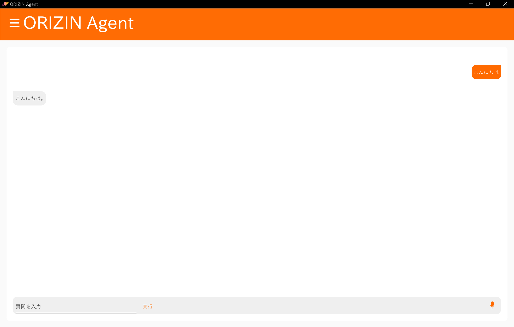

ORIZIN Agent HTMLとは
ORIZIN Agent HTMLは，オープンソースのAIアシスタントです。ルールベースシステムを採用しており，Raspberry Pi等の低スペックのマシン上でも動作します。動作にはPython 3，Eel(Python 3ライブラリー)，Google Chromeが必要です。
特長
GUIの描画にはWEBブラウザーを使用しており，WEB Speech APIを用いた音声合成・音声認識をサポートしています。
また，ルールベースシステムを採用しているため，基本的な機能はオフラインでも動作します。